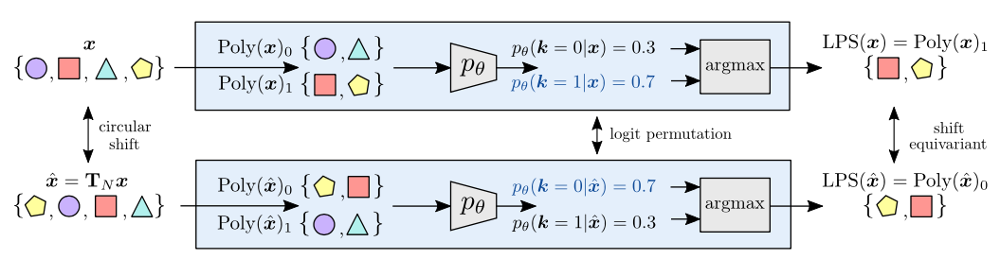

University of Illinois at Urbana-Champaign
1Purdue University
(* Equal Contribution)
Neural Information Processing Systems (NeurIPS), 2022

Abstract
We propose learnable polyphase sampling (LPS), a pair of learnable down/upsampling layers that enable truly shift-invariant and equivariant convolutional networks. LPS can be trained end-to-end from data and generalizes existing handcrafted downsampling layers. It is widely applicable as it can be integrated into any convolutional network by replacing down/upsampling layers. We evaluate LPS on image classification and semantic segmentation. Experiments show that LPS is on-par with or outperforms existing methods in both performance and shift consistency. For the first time, we achieve true shift-equivariance on semantic segmentation (PASCAL VOC), i.e., 100% shift consistency, outperforming baselines by an absolute 3.3%.
Materials
Code
Citation
@inproceedings{rojas-neurips2022-learnable,
title = {Learnable Polyphase Sampling for Shift Invariant and Equivariant Convolutional Networks},
author = {Rojas-Gomez$^*$, Renan A and Lim$^*$, Teck Yian and Schwing, Alexander G and Do, Minh N and Yeh, Raymond A},
booktitle = {Neural Information Processing Systems (NeurIPS)},
year = {2022},
note = {($^*$ Equal Contribution)},
}